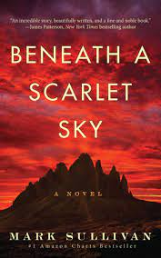

Beneath A Scarlet Sky is a novel based on the true story of forgotten war hero Pino Lella. When his family home in Milan is destroyed by Allied bombs, Pino joins an underground railroad helping Jews escape over the Alps. In an attempt to protect him, Pino's parents force him to enlist as a German soldier.
But after Pino is injured he is recruited to become the personal driver for Adolf Hitlers left hand in Italy, General Hans Leyers, one of the Third Reichs most mysterious and powerful commanders. Now with the opportunity to spy for the Allies inside the German High Command, Pino endures the horrors of the war and the Nazi occupation by fighting in secret.
 About the Author